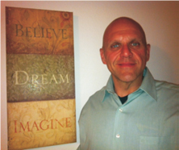

Founders Statement

Johnny Green- Founder Vital Pest Management
I have spent over twelve years in the Pest Industry servicing one million square foot facilities to one thousand square foot homes. I always strive to exceed the customer’s expectations, which we believe is the most important part of any service.
I never stop until the problem is solved and a sustainable program is in place.
I have served in every capacity from service specialist to V.P. of operations, and all of my experience has taught me that treating customers, employees, and the environment with respect always leads to excellent results. Those reasons alone were the catalyst behind why I chose to leave the corporate world of “cookie cutter” Pest Control and start my own business.
You are not just another customer to us. You are the most important customer to us. If given the opportunity, we will prove it!
Mission Statement
To Treat every interaction with our customers, coworkers and the environment with integrity, honesty and respect. To form strong partnerships built on trust, hard work and sustainable long term results.
Vital Pest Management Philosophy
Vital Pest Management is a company with a "can do" attitude, we never accept mediocre results and we never stop until the job is done right and a sustainable program is in place.
Our philosophy is ingrained throughout the organization from top to bottom. We believe that compromising our mission to provide the highest quality service available cannot be tolerated for any reason. We believe that short cuts can only lead to a poor result which would put our integrity into question, and that our customers should always believe we are the best company for the job. We utilize the most advanced techniques and chemicals available and are continually searching for improvements.
We believe that we are a partner you can trust and depend on, a partner that will communicate and share best practices and a partner that understands the importance of the service we provide.